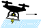

Doctoral Research: Integrated Control of Aircraft Motion and Power Electronics to Achieve Efficient In-flight Inductive Power Transfer for Drones

Achievements
International Conferences (Peer-reviewed)
K. Fujimoto, T. Hamada and H. Fujimoto, "Proposal on Model Based Current Overshoot Suppression of Receiver Side Coil in Drone Wireless Power Transfer System," in IEEE 2022 Wireless Power Week (WPW), pp. 235-239, Bordeaux, France, 2022, doi: 10.1109/WPW54272.2022.9854039.
K. Fujimoto, S. Nagai, B. M. Nguyen, H. Fujimoto, "Test Bench Study on Attitude Estimation in Ground Effect Region Based on Motor Current for In-Flight Inductive Power Transfer of Drones," in IEEE 2023 The 49th Annual Conference of the IEEE Industrial Electronics Society (IECON), Singapore, 2023 (To be presented).
Y. Sato, K. Fujimoto, R. Matsumoto, S. Nagai, B. M. Nguyen, H. Fujimoto, "Basic Study on Received Power Control of In-Flight Inductive Power Transfer for Drones by Active Rectifier Switching and Altitude Regulation," in IEEE 2023 The 49th Annual Conference of the IEEE Industrial Electronics Society (IECON), Singapore, 2023 (To be presented).
Domestic Conferences (Non-peer-reviewed)
K. Fujimoto , K. Yokota, S. Nagai, H. Fujimoto,"Modeling and Verification of Pitch-Dependent Coupling Coefficient for WPT to Flying Drone," in IEE-Japan 2021 Industry Applications Society Conference (JIASC), No. 48 ,Nagaoka University of Technology , 2021.
K. Fujimoto, O. Shimizu, H. Fujimoto, J. Katsuya, T. Sato, "Requirement Analysis for Dynamic Wireless Power Transfer with Big Data from Real Vehicles," in IEE-Japan Joint Technical Meeting on Power Engineering/Power Systems Engineering/Semiconductor Power Converter (SPC), No. SPC23140 , Okinawa, 2023.
Y. Sato, K. Fujimoto, R. Matsumoto, S. Nagai, B. M. Nguyen, H. Fujimoto, "Basic Study on Flight Altitude and Battery Current Control in In-Flight Wireless Power Transfer for Drones," in IEE-Japan Joint Technical Meeting on Power Engineering/Power Systems Engineering/Semiconductor Power Converter (SPC), No. SPC23141 , Okinawa, 2023.
K. Fujimoto, H. Fujimoto, Y. Isaoka, Y. Terada, "High Precision Control for Twin-Drive System of Machine Tool Based on Mode Decoupling with Virtual Viscosity: Basic Study on Two-Inertia System," in IEE-Japan Technical Meeting on Mechatronics Control (PSS), No. MEC23011, Tokyo, 2023